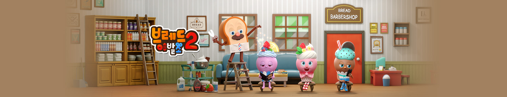

무뚝뚝하고 시니컬한 성격에 자기중심적이고 돈만 밝히는 것 같지만,
곤경에 빠진 이웃을 보면 남몰래 챙겨주는 따뜻한 감성의 소유자.
이발소를 운영하며 버는 막대한 돈으로 요트나 스포츠카를 수집한다.
실수투성이에 매사에 덤벙대고 제대로 할 줄 아는 건 하나도 없지만,
이발에 대한 열정만큼은 그 누구보다 강해 결코 미워할 수가 없다.
지나친 열정 때문에 주변 사람까지 피곤해 진다.
몸 속의 우유로 생크림을 만드는 등, 활약하지만,
유통기한이 지나기 전에 몸 속의 우유를 자주 바꿔줘야 한다.
어둡고 시크하고 반사회적인 성격의 소유자.
브레드의 이발소에 캐셔로 취직하지만 정작 일에는 관심이 없고,
잡지를 보거나 인터넷 쇼핑하는데 대부분의 시간을 보낸다.
야근하는 것을 죽기보다 싫어하고 월급이 밀리면 파업을 하기도 한다.
수많은 빵들의 사랑을 받는 국민 MC.
화려한 언변으로 관객과 시청자들의 마음을 사로잡는다.
TV쇼, 행사등 가리지않고 다양한 무대에서 MC로 활약한다.
중국에서 수련을 쌓고 온 도사처럼 보이는 외모로 여러 순진한 빵들을 속여 돈을 번다.
평소에는 눈을 감고 온화한 모습이지만 놀라면 눈을 번쩍 뜬다.
브레드이발소 때문에 미용실이 매일 파리만 날리자 브레드이발소를 파산시키기 위해 온갖 비열하고 악랄한 수를 쓴다.
이발실력은 형편없지만 잔머리 굴리는데 뛰어나다.
툭하면 부러지는 단점이 있다.
매사에 긍정적이고 열정과 정의감이 넘치는 청년 경찰 프레첼.
주어진 모든 일을 열심히 하지만 머리에 뚫린 구멍 때문에 매번 뜻대로 되지는 않는다.
세계적으로 인기가 있는 한류스타.
버터를 보기위해 외국 관광객들이 베이커리타운을 방문하기도 한다.
얼굴은 잘생겼지만 미끌미끌한 피부 때문에 연기를 못하는 것이 콤플렉스.